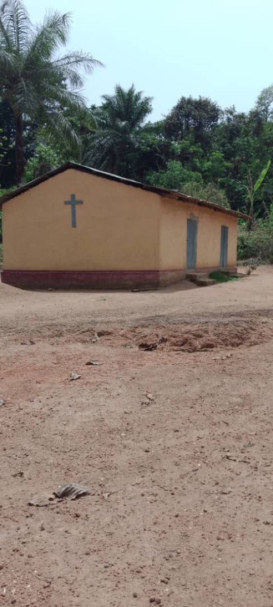
Church
We work with local and overseas churches to reach communities and improve access to education — fundamental to the Christian faith principles at the heart of the Trust.
The Tolno Education Trust
We work alongside the Millimou community in Guinea to build schools, support girls' education, and improve water, health and livelihoods — helping transform lives, one child at a time.
One child, one teacher, one book and one pen can change the world. Malala Yousafzai
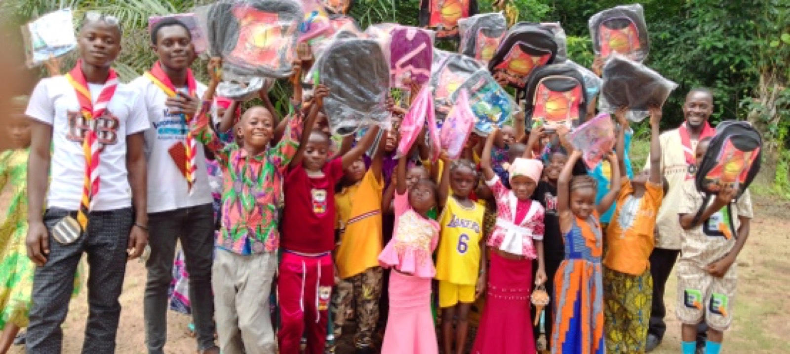
“We never know the worth of water till the well is dry.”Thomas Fuller
About the Trust

Rene Tolno · Founder
Rene Tolno, a qualified construction engineer, established the Tolno Education Trust to support community projects in and around the village of Millimou in Guinea, West Africa.
Rene has previously worked with various NGOs on building schools, hospitals, health centres, and water and sanitation projects. He now lives in the UK and manages the projects from there, thanks to a strong and committed team on the ground.
He founded the Trust to promote education for all in his region. Rene grew up in Millimou — a kingdom territory in the south of Guinea — and his family taught him to value education from a young age, prioritising his schooling even though they had very little.
It is Rene's belief that education is a fundamental right, and that every child — and adult — should have open access to it, regardless of their financial circumstances.
“In 2008, when I visited my village, I spent time with the children — reading books, playing football and more — and realised that much more needed to be done in the community. My vision to establish a school grew from there.”
Over the past few years we have built a school with four classrooms, with capacity for 120+ children.
Families are now enthusiastic about education — girls in particular.
We promote girls' education, training in agriculture and community development. Through our social enterprise for women we install solar-powered wells in schools, provide essential educational materials, and help maintain and improve existing facilities — supporting the education system and basic health and nutrition education in schools.
Our work
Explore the areas we support in the Millimou community. Every one is open to everyone.
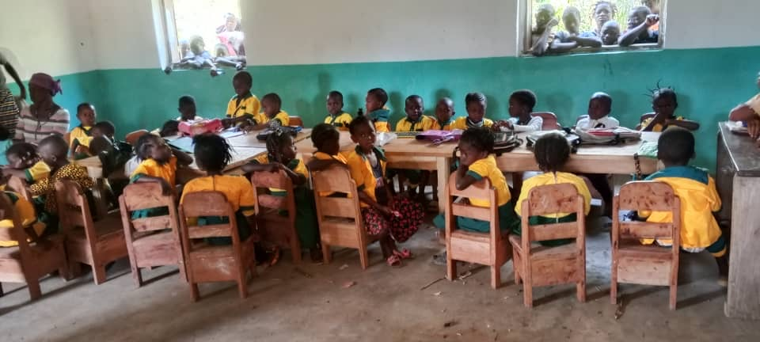
Projects · Education
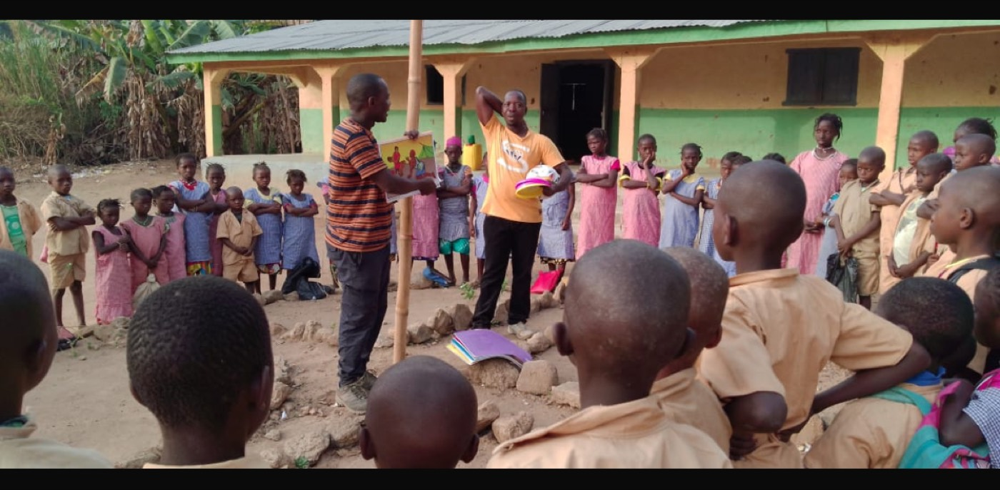
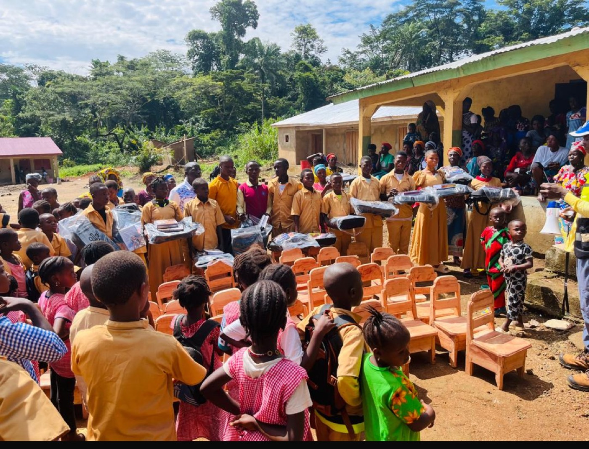
Projects · School
The Trust campaigned for a school in the village, and it is now expanding — run in collaboration with the government. A new school building, new furniture and better facilities mean we can create a prep school and help even more children.
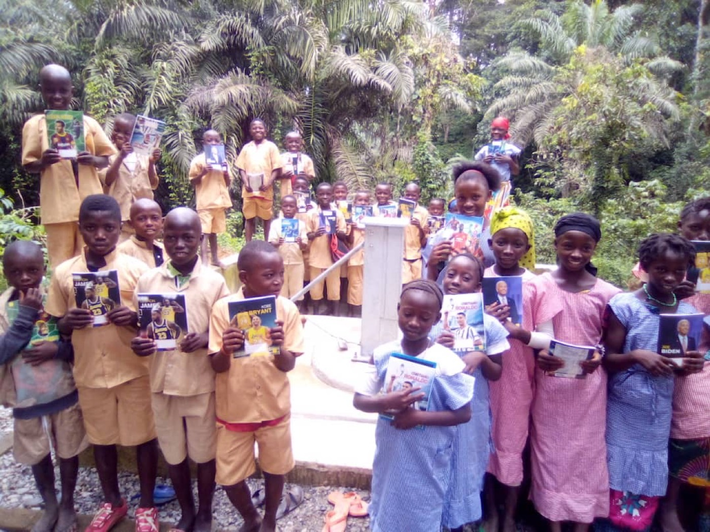
Projects · Library
We are hoping to create a library for the community — a vital resource for children's learning and a real boost for the school. The Trust donates books and resources, and our staff help run the library, created in collaboration with the government.
We warmly welcome donations of physical books. If you have books you'd like to give, please get in touch and we'll arrange everything with you.
Email us to donate booksProjects · Health
Supporting basic health, hygiene and wellbeing across the community.
Advice on caring for newborns, help with feeding, sanitation for women, and connecting mothers with government nurses and pregnancy advice.
Basic first aid treatment, CPR training, and bandaging and injury care so people can respond when it matters most.
Providing local food to children and education on a balanced, healthy diet.
Education about available vaccines and practical ways to stop infection spreading through the community.
Guarding against viruses such as Ebola — education with soap, clean surroundings, hygiene products, mosquito nets and hand washing.
Education about brushing teeth, and providing toothbrushes and toothpaste.
Projects · Livelihoods
Helping communities earn a living and become self-sufficient through agriculture and enterprise.

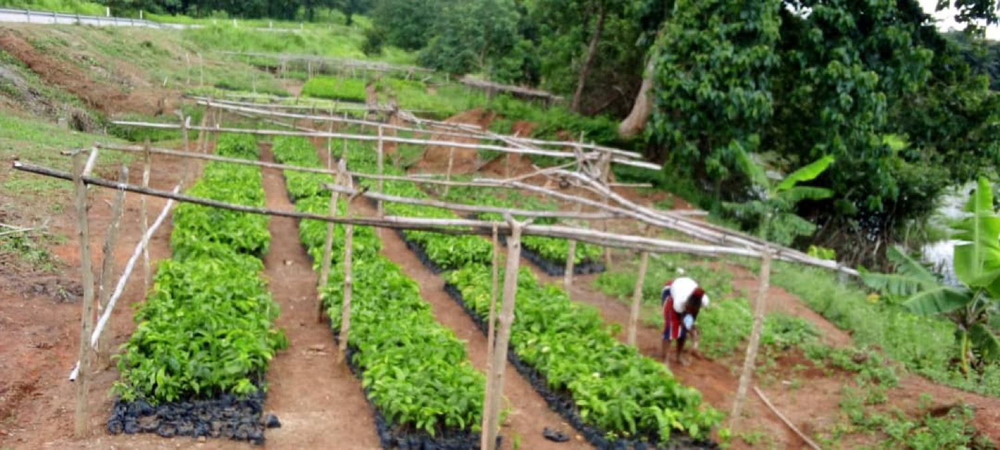

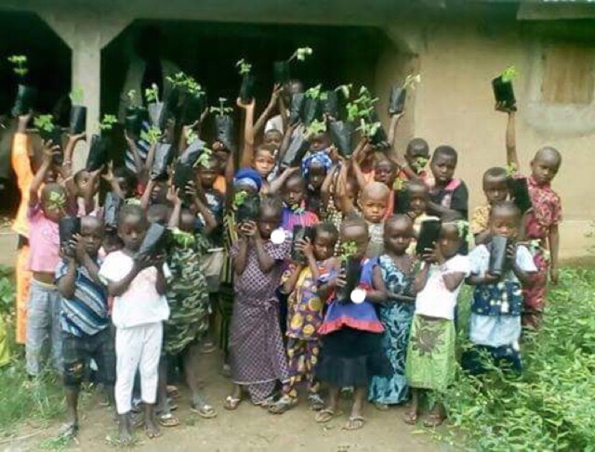
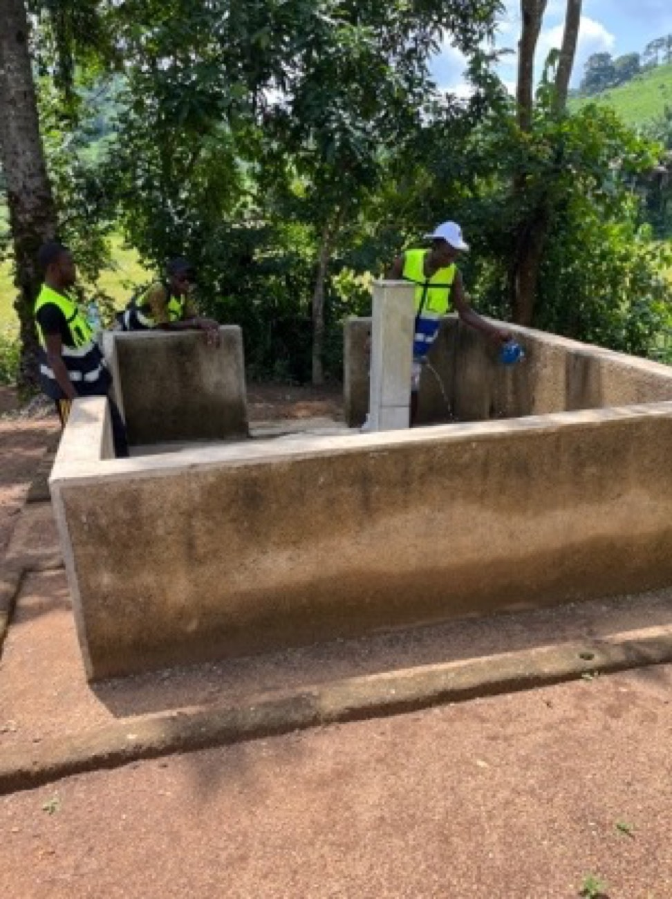
Projects · Water
Where villages once relied on a labour-intensive hand pump, a new solar pump now delivers water faster — and pipes it directly to homes.
Support this projectProjects · Collaboration
Our projects are open to everyone, bringing together people of all faiths and beliefs.

We work with local and overseas churches to reach communities and improve access to education — fundamental to the Christian faith principles at the heart of the Trust.
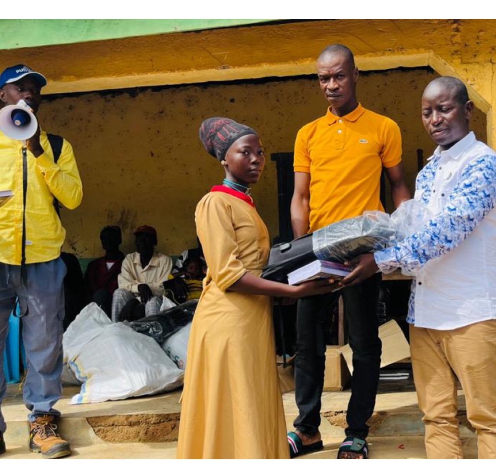
We work with local and national government to improve education, provide a community library, facilitate healthcare and amenities, supply books and resources, and gain permission to build facilities such as wells and water supplies.
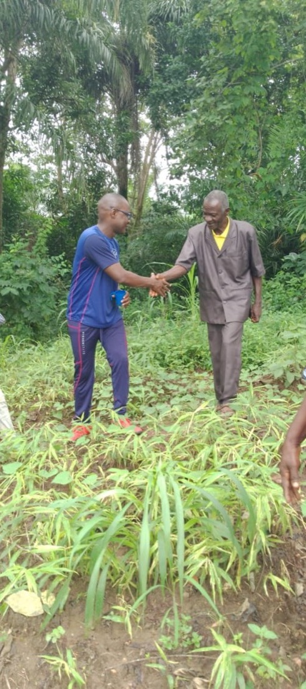
Every project is open to everyone. We organise community ideas and skill-sharing, bringing together people of all faiths and beliefs to work towards a shared future.
Education is the most powerful weapon which you can use to change the world. Nelson Mandela
Success stories
One girl from Millimou — and what an education made possible.
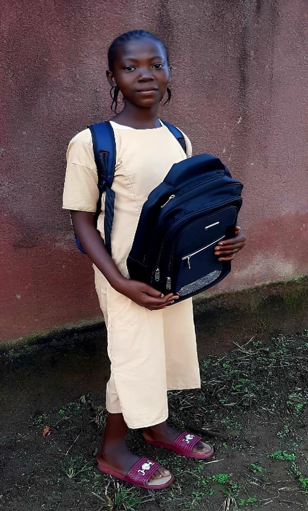
Sia Fanta Yombouno was born in Millimou in 2009 and started school in 2018, at the very school the Trust helped bring to life. From her first year to her last she finished top of her class — and when she sat the Certificate of Elementary Studies (CEE), she was the only pupil from her school to be admitted.
Her father decided to send her to school after watching a woman engineer lead the construction of the bridge to their village. “When I saw that it was this woman leading the work, I said: I want my daughter to be like her,” he recalls. Today, Fanta dreams of becoming an engineer herself.
Today I am very proud of Fanta — and all of Millimou is proud. She is our torchbearer. School Director, Millimou
At the time, the school had just three classrooms shared between six year-groups — teachers even divided a single blackboard in two. It now has four. With your support, we can give students like Fanta the classrooms, teachers and resources their talent deserves.
Help students like FantaGet involved
With your help we can reach further and support more people.
Give quickly and securely online through PayPal.
You'll donate in British Pounds (GBP)
Donate with PayPalYour support helps us:
Payment processing fees may be deducted from donations.
Donate directly by bank transfer using the details below.
Bank transfers reach us in full, with no processing fees deducted.